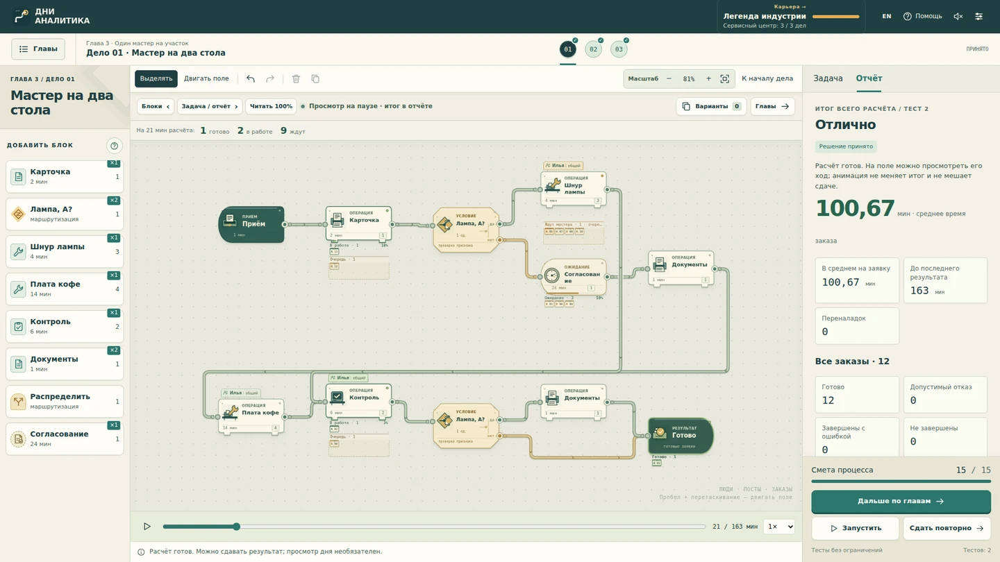
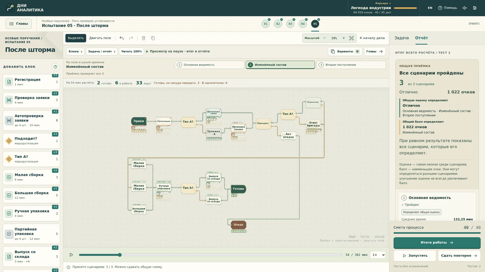

Браузерная головоломка
Дни
аналитика.
Соберите процесс,
который работает.
Заказы ждут, мастер один, срок уже обещан. Расставьте операции, соедините их в схему и выясните, где работа теряет время.
Без установки и регистрации · Для компьютера
Два стола.
Один мастер.


что есть кому за ним работать.
- Основная история
- 45 рабочих дел
- Проверка устойчивости
- 5 особых поручений
- Начать с нуля
- 3 учебных задания
- Доступ
- БесплатноПрямо в браузере
01 / Как играть
От «вроде всё логично»
до «это работает».
Здесь схема оживает: заказы проходят по маршрутам, ждут сотрудников и занимают место. Результат каждого решения виден в расчёте.
- 01
Разберитесь в задаче
Прочитайте дело: что нужно получить, какие операции обязательны, сколько есть времени и на что хватит бюджета.
Условия → ограничения - 02
Соберите свою схему
Расставьте рабочие блоки, соедините их и выберите маршруты. Решите, что можно делать параллельно, а что должно ждать.
Операции → связи - 03
Проверьте на практике
Запустите расчёт, проследите путь заказов и изучите отчёт. Найдите задержку, измените решение и сдайте работающий процесс.
Расчёт → улучшение
02 / В чём головоломка
Больше оборудования.
А быстрее не стало.
Дело может быть в человеке, которого делят два поста. Или в партии, которая слишком долго собирается. Или в заказе, пришедшем под конец смены.
Придётся искать причину, а затем проверять догадку. Хорошее решение учитывает всю цепочку.
Два поста ≠ два сотрудника
Упрощённый пример общего ресурса. В игре такие зависимости влияют на очереди и сроки.
Обещания имеют срок
Новые заказы приходят в течение смены. Быстрый процесс в среднем ещё может опоздать с конкретным заказом.
Запас не бесконечен
Очереди занимают место, оборудование стоит денег. Придётся выбирать, какое улучшение действительно нужно.
Один план. Разные дни.
В особых поручениях одна схема проходит несколько сценариев. Решение должно работать в каждом из них.
03 / Внутри игры
Вся система
перед глазами.
Слева — доступные операции. В центре — ваш процесс. Справа — условия и отчёт. Можно проследить движение заказов и увидеть, где они ждут.

04 / От первого маршрута до целой системы
Сначала — разобраться.
Потом — отвечать за всё.
Мастерская, пекарня, типография, склад и музей. Вместе с новыми делами появляются новые зависимости, а привычные решения проходят проверку в изменившихся условиях.
- 3 задания
Вводный курс
Маршруты, условия и параллельная работа. Редактор осваивается прямо в деле.
- 45 дел · 12 глав
Основная история
От небольшого участка до общей работы филиалов и подготовки музея к открытию.
- 5 испытаний
Особые поручения
Проверки устойчивости, которые постепенно открываются после основной истории.
05 / Перед началом
Пара рабочих
вопросов.
Нужно разбираться в аналитике или BPMN?
Нет. Начните с трёх учебных заданий: они знакомят с маршрутами, условиями и параллельной работой. Игра использует понятные рабочие блоки. Знать формальную нотацию заранее не требуется.
Игра бесплатная? Нужна регистрация?
Да, вся опубликованная версия доступна бесплатно. Ничего устанавливать и создавать аккаунт не нужно. Кнопка «Играть» сразу открывает игру в браузере.
Сохранится ли мой прогресс?
Прогресс сохраняется автоматически в этом браузере на этом устройстве. Вернитесь по той же ссылке в том же браузере. Синхронизации между устройствами нет. Очистка данных сайта или завершение приватного сеанса может удалить сохранение.
Можно играть с телефона?
Для работы со схемами лучше использовать компьютер или ноутбук с широким экраном и мышью. На телефоне можно познакомиться с игрой, но её рабочее поле рассчитано на большой экран.
Нужно спешить во время игры?
Минуты в отчёте — расчётное время внутри процесса. Они не измеряют, как долго вы думаете над решением. Схему можно спокойно изучать и переделывать.
Кто сделал игру и куда написать об ошибке?
Автор — Тимур Махмутов. Если что-то не работает, напишите в Telegram →. Укажите название дела, что произошло и какой браузер используете. Скриншот поможет разобраться.
Ваше первое дело уже ждёт
Посмотрим,
где всё тормозит?
Бесплатно · Без регистрации
Прогресс остаётся в этом браузере